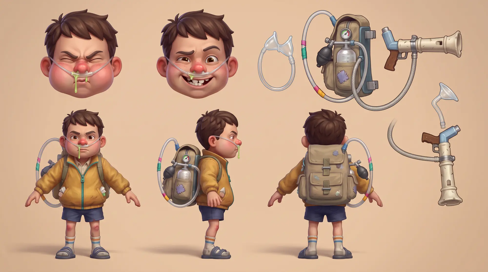
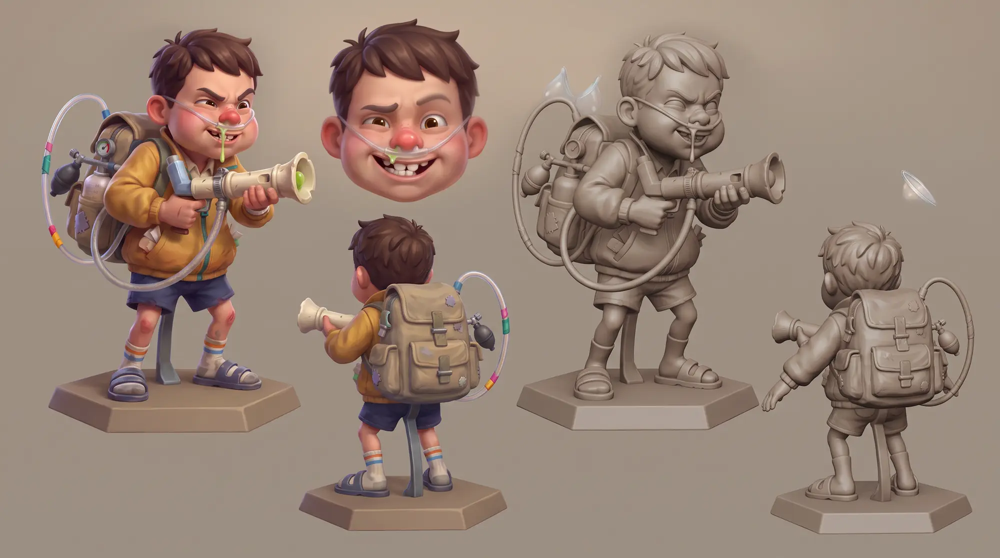

MEIO · MAGO
CATARINO
O MENINO CONGESTIONADO
Criança congestionada e inventora de quintal. Coleta, pressuriza e dispara catarro por um sistema improvisado de mochila medicinal e flauta-canhão.
DESIGN APROVADOPróximo passo
CRAFT 3D PENDENTE
0 de 5 etapas aprovadas · 3 com imagem
01CONCEPTCRAFT PENDENTE
Ampliar imagemCONCEPT
O design-base e o mecanismo estão encaminhados, mas pele, tecido, cabelo, equipamento e luz ainda não têm a profundidade 3D da Dona Chinela.
Baixar imagem02SHEETCRAFT PENDENTE


Ampliar imagemSHEET
A prancha reúne views, expressões e equipamento, porém propaga o acabamento mais plano do concept atual. Deve ser refeita depois do novo master visual.
Baixar imagem03VERSÃO 3DREFAZER


Ampliar imagemVERSÃO 3D
O board atual usa quatro views. Refazer com exatamente uma versão colorida e duas clay, todas na base hexagonal e com tubos consolidados.
Baixar imagem04CARTAPENDENTE
Sem asset aprovado para esta etapa.
CARTA
Falta criar a imagem contextualizada com personalidade, território e acting próprios, sem alterar rosto, roupa ou mecanismo.
Aguardar as etapas anteriores.
05VÍDEOPENDENTE
Sem asset aprovado para esta etapa.
VÍDEO
Será uma animação curta derivada diretamente da carta aprovada. Nenhuma geração antes de fechar o pipeline visual.
Aguardar as etapas anteriores.
Arquivos de produção preservados (1)
Renders intermediários e estudos. Não substituem o status de aprovação das etapas acima.